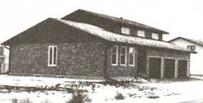
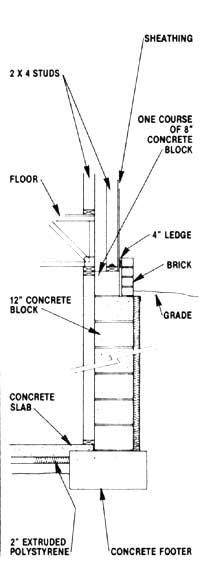

Is brick veneer considered appropriate for super-insulated houses? I'd like to brick my home, but I don't want to decrease the energy efficiency of my dwelling.
Brick veneer adds significantly to the construc. tion cost of a house but does little to increase (or decrease) the structure's energy efficiency. In most cases, adding a brick wrap can be justified only by the resulting look. If you intend simply to cover the structure as it stands, us. ing a wholebrick veneer, the accompanying drawing illustrates one technique that's comm only used for ranch and split-level homes.
On the other hand, you might want to consider a product such as the exterior wall system put out by Pan-Brick Inc. (610 Henderson Dr., Regina, Saskatchewan, Canada S4N 5X3). The PanBrick panels combine plywood sheathing, closed-cell polyurethane insulation, and a veneer of kiln-fired clay brick slices in one easy-to-install building component. In addition, the prefab panels boast an R val ue of 8.7 (compared to the R1.2 of regular brick veneer) and are said to cost 20% less than a tier of full-dimension brick. Such a product can be especially attractive for retrofit applications in which a whole-brick wall isn't necessary. If your local lumberyard isn't fa. miliar with this system, contact the folks at PanBrick, and they'll put you in touch with the nearest distributor.
-Michael Scott.
Superinsulation pioneer Michael Scott has recently finished a new book, Superinsulation Design and Construction. For more information, send a selfaddressed, stamped envelope with your inquiry to Superinsulation Ltd., RR 3, Box 18, Northfield, MN 55057.
A Masonry
Stove "Insert"
I'm wondering if I could use a fireplace insert as the firebox for a masonry stove. I'd build channels for convection and provide ample mass for radiant heat storage.
Yes, you could, but I have three suggestions for doing so, all of which pertain to the unit's durability and maintenance. First, don't place the rigid mortared masonry in direct contact with the bulk of the insert. Instead, leave space to allow for thermal expansion differences between the insert and the masonry. Second, because you may need to do maintenance work on the heater or even replace the whole unit in the future, I'd suggest designing the installation so that the in sert can be removed with a minimum of masonry breakage. (You'll achieve some of the benefits of a masonry stove just by having the heater surrounded by brick, even if the material doesn't touch the heater and the fuel gases merely pass up through an ordinary chimney.) And finally, select a relatively rugged and simple insert, to maximize your stove's life expectancy and minimize maintenance troubles.
Most inserts have blowers that push the heat from the inner surfaces of the unit directly into the adjoining room, and I presume you wouldn't dismantle this system. However, if you want to achieve the same heat storage and slow, steady heat output that are characteristic of a true masonry stove, a unit that doesn't send as much warmth directly into the house-such as a radiant stove-may be a better choice. If you haven't al. ready purchased the insert, you could just use a woodstove.
A closing thought: The manufacturer's warranty on the insert or stove will, of course, be voided in your contemplated installation.
-Jay Shelton.
Jay Shelton is the director of Shelton Energy Research and the author of various books and articles about solid-fuel heating. For a description of the publications available from SER, send a self-addressed, stamped envelope to Shelton Energy Research, P.O. Box 5235, Santa Fe, NM 87502.
|
 PHOTO COURTESY OF PAN BRICK INC. |
 |
|